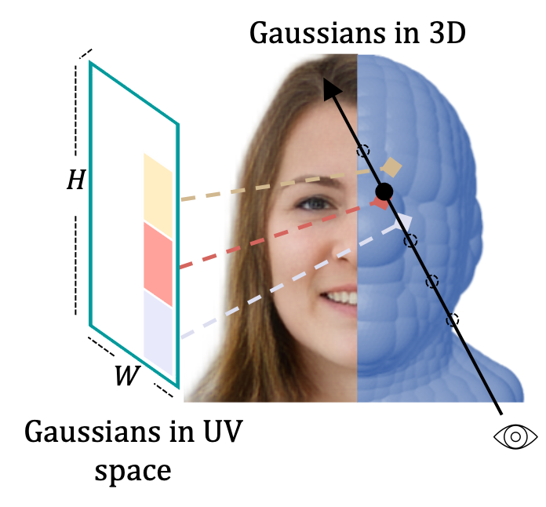

4RC: 4D Reconstruction via Conditional Querying Anytime and Anywhere
4RC is a unified feed-forward framework for 4D reconstruction from monocular videos with conditional querying across time and views.
project page / arXiv / code / bibtex
I am a postdoctoral researcher at the Visual Geometry Group, University of Oxford, working with Prof. Andrea Vedaldi.
I received my Ph.D. from Nanyang Technological University, advised by Prof. Chen Change Loy and Asst. Prof. Xingang Pan at MMLab@NTU. Earlier, I earned my B.Eng. in Software Engineering from Yepeida Honors College, BUPT.
My interests lie in the intersection of computer vision, computer graphics, and machine learning. I am currently interested in Spatial AI, Embodied AI, Physical AI, 3D AIGC, and world models. I have also worked on shape analysis, inverse graphics, neural rendering, and 3D avatars.
Recent work from 2024 to 2026.
4RC is a unified feed-forward framework for 4D reconstruction from monocular videos with conditional querying across time and views.
project page / arXiv / code / bibtex
VFMF performs stochastic forecasting of future worlds in the latent space of vision foundation models.
project page / arXiv / code / bibtex
Video4Spatial studies complex visuospatial reasoning directly from video generation.
project page / arXiv / bibtex
STream3R resolves streaming 3D and 4D reconstruction as a sequential registration task with causal attention.
project page / arXiv / code / bibtex
GaussianAnything generates high-quality editable surfel Gaussians from images or text.
project page / arXiv / code / demo / bibtex
ArtiLatent generates articulated 3D objects.
project page / arXiv / code / bibtex
WorldMem enables long-term memory for video world models.
project page / arXiv / code / demo / bibtex

ObjCtrl-2.5D enables training-free object control in image-to-video generation using depth and camera trajectories.
project page / arXiv / code / demo

A 3D diffusion prior enables textured regenerative morphing for 3D shapes.
project page / arXiv / code / bibtex
SAR3D generates and understands 3D objects in a scale-level autoregressive way.
project page / pdf / code / video / bibtex

3DEnhancer enhances low-quality 3D assets through multi-view diffusion priors.
project page / arXiv / code / video / bibtex

3DTopia-XL scales high-quality 3D asset generation via primitive diffusion.
project page / arXiv / code
LN3Diff creates high-quality 3D meshes from image or text within seconds.
project page / TPAMI / arXiv / code / bibtex

Gaussian3Diff uses UV-space 3D Gaussians for view synthesis, animation, and unconditional 3D diffusion for full heads.
project page / arXiv / bibtex
Selected earlier work.
DeformToon3D achieves high-quality geometry and texture stylization under given styles.
project page / arXiv / code / bibtex
E3DGE is an encoder-based 3D GAN inversion framework for high-quality shape and texture reconstruction.
EVA3D is a high-quality unconditional 3D human generative model that only requires 2D image collections for training.
project page / arXiv / video / code / bibtex
DDF studies dense correspondence in NeRF-based GANs and distills it without supervision.
project page / arXiv / Springer / bibtex
MagnifierNet is a triple-branch network for mining details from whole to parts in person re-identification.